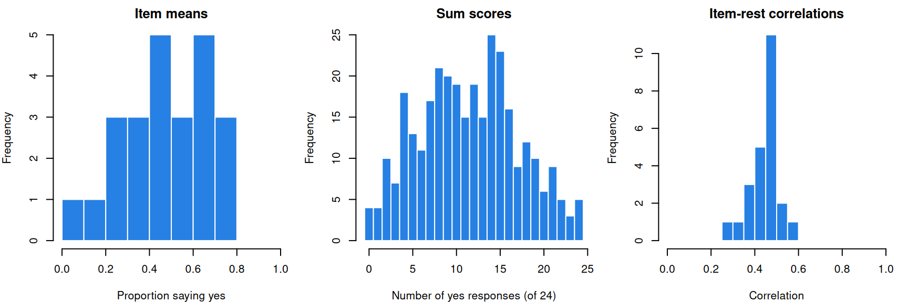
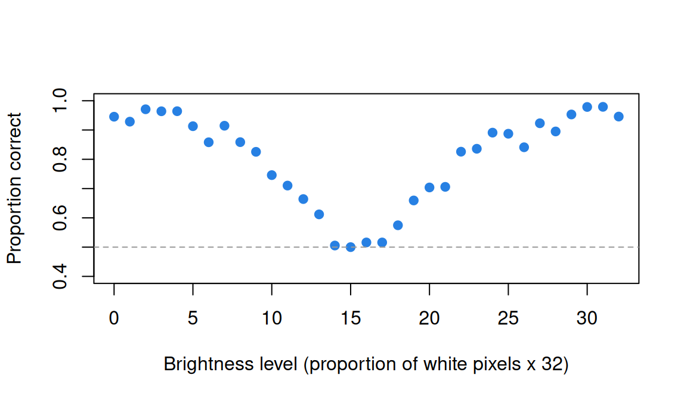
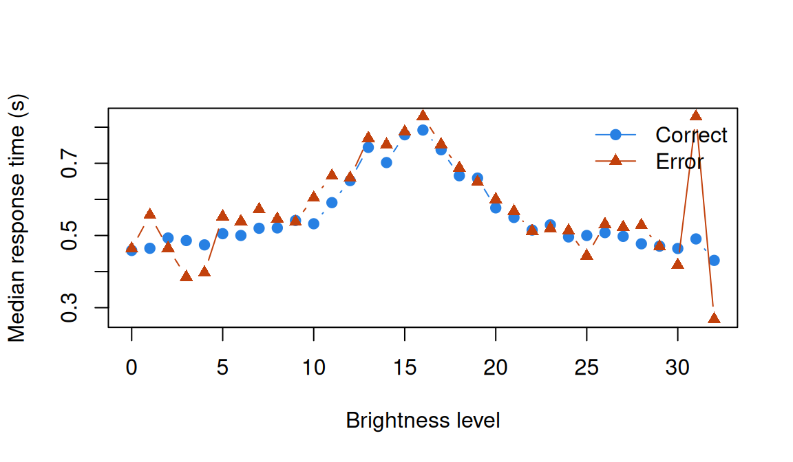

Item response data and the IRW
What this is for
Every analysis in this course starts from a record of which respondent gave which response to which item. Before fitting a model, we should know how it is stored, what is missing, what rides along, and what a few simple numbers say. Item response data have their surprises (an item scored the opposite way from its neighbours, a respondent who appears hundreds of times, a missing response that was never asked for), and they are far cheaper to find now than after a model has been fit. This lesson introduces the data, the Item Response Warehouse (IRW) that supplies them, and a first look at three IRW tables: yes/no answers on verbal aggression, a five-point Big Five inventory, and thousands of timed perceptual judgements.
Goals
By the end of this lesson you should be able to:
- say what item response data are, and what the IRW holds;
- read an IRW table: what one row is, and what
id,item,respand the optional columns hold; - move between long and wide formats, and say what needs a decision along the way;
- compute and interpret four first descriptives for 0/1 and Likert items;
- check which way each item runs before adding items up;
- recognise when a table records more than responses: response times, repeated trials, design columns and covariates.
Core ideas
Item response data, and the IRW
Respondents (usually people) meet items, and each meeting produces a response: a right or wrong answer, a rating from 1 to 5, a key pressed on seeing a patch of pixels. Judging whether items are well written or constructs well defined is a separate job, but a measure’s quality rests on it; Constructs and construct maps and the Validity module take them up.
The Item Response Warehouse (Domingue et al., 2025) collects such data. (I lead the team that builds it.) The data are open: each table’s licence permits reuse, and the code that converted the original files is public (ben-domingue/irw). They are harmonized: every table follows one standard, so code written for one runs on the others. It holds more than 4,000 tables (index), most with metadata and many with item text; Nadela et al. (2026) describe how to use it. This course cites each table’s original study in the text and in each lesson’s Data sources block.
What is in it? A tour, with the lesson that uses each table:
- Achievement tests:
cdm_timss11, TIMSS mathematics from Austria, 174 items in 14 booklets (Linking and equating). - Personality:
bfi2_zhang_2025, the BFI-2 in four response formats (Factor analysis I). - Clinical screening:
c19prc_uk_mcbride_2021_phq9, the PHQ-9 depression screener in six waves of a UK COVID-19 panel (What does a score mean?). - Randomized trials:
gilbert_meta_12, vocabulary after a grade 2 literacy intervention, with treatment status (What is measurement?). - Cognitive experiments:
enkavi_2019_stroop, the Stroop task, trial by trial, with response times (Trials as items). - Child development:
vocab_assessment_3_to_8_year_old_children, German receptive vocabulary in children aged 3 to 8 (Validity as causation). - Games:
chess_lnirt, the Amsterdam Chess Test, with each player’s Elo rating (The likelihood, The Rasch model). - Human judges:
Forthmann-2024-cleverness_ratings, five raters scoring the cleverness of uses for everyday objects (Generalizability theory). - Items written by AI:
gpt4mcq_young_2025, a multiple-choice quiz written by ChatGPT-4 (AI and psychometrics).
The data standard
What does an IRW table look like? It has three essential columns (the IRW data standard): id, the thing being measured (usually a respondent, sometimes, say, a word); item; and resp, the response, always a number.
Within an item, responses are ordinal: higher means more of something (more correct, more agreement). Dichotomous responses are 0 or 1; polytomous ones have more categories, such as a 1–5 Likert scale. The standard does not promise that higher means the same thing on every item: a reverse-worded item, where agreeing means less of the trait, may be stored as answered (see A first look).
Tables are stored long: one row per respondent–item response, so 24 answers occupy 24 rows. Why not the familiar spreadsheet, one row per respondent (wide)? Because a response can carry information of its own (how long it took, when, which attempt), and in long format each is one more column beside resp, while in wide format each would need a second grid. This is what Wickham (2014) calls tidy data, each observation a row; here the observation is the response.
Try it: long and wide
Three respondents, three items, each response timed. Pick a row of the long table, find its cell in the wide one, then delete it.
Each row of the long table is one cell of the wide one. Delete a row and the long table gets shorter, while the wide table keeps its shape and shows an empty (NA) cell. And rt has nowhere to go in the wide table.
Long to wide, and how lessons read data
Many tools want the wide layout. The reshape is mechanical (base R’s tapply() or reshape(), or irw_long2resp() in the irw package), but three things happen along the way.
- Missing rows become empty cells, which need a decision: leave out, score as wrong, or model. Skipping an item differs from never being shown it; when the design decides what is missing, the gaps can often be set aside (Rubin, 1976, gives the conditions), as Linking and equating and Item banks and adaptive testing do.
- Respondents with no responses carry no information. A respondent whose every
respis empty becomes a row of NAs; every lesson drops them. - Repeated responses need a rule. If a respondent met an item a dozen times, the reshape must keep one attempt, average them, or redefine the respondent or item. None is neutral; Trials as items takes this up.
Try it: patterns of missingness
Thirty respondents and twelve items; dark cells are responses, pale cells missing ones.
Random skips scatter the gaps, and every pair of items is still answered together by someone. Two booklets leave a third of the cells empty, and 16 pairs of items are never seen together, so the data say nothing directly about how they relate; linking designs are built this way. Stopping early piles the gaps at the end, for a reason that has to do with the respondent. Real tables show these patterns (checked below). In cdm_timss11, each student took one of 14 booklets and each item sits in two, so 11,886 of the 15,051 pairs of items are never answered by the same student. In pirlsmissing_sirt, one PIRLS booklet, skips are far from random: items are left blank by anywhere from 1% to 25% of students. And for 134 of its students the blanks in the second passage run to its last item, which looks like stopping early. I found no IRW table I could verify as an adaptive test.
How lessons read data. Each IRW table’s landing page (verbagg’s, for example) has a Download CSV link that needs no account; the lessons read it with read.csv(). The link names the data version (v59_0), so an analysis can be pinned to a release. The real-data code’s irw_csv() finds the link. The irw R package does more but needs a free Redivis account (see Going further).
A first look
With the data wide, one row per respondent, four descriptives give a first look at any table (item means are column means; sum scores are row sums):
- Missingness and categories, by item. An item everyone answered alike says nothing about differences between respondents; an unused category can trouble polytomous models (Polytomous items).
- Item means. For 0/1 items, the proportion of 1s; on a test, a first measure of how easy an item is (the p-value of Classical test theory and reliability, which The Rasch model replaces with a difficulty). A Likert mean is on the response scale, not a proportion.
- The sum-score distribution. The simplest score: classical test theory is built on it, and the Rasch model needs nothing more. Its distribution shows any pile-up at floor or ceiling.
- Item-rest correlations: each item against the sum of the other items, positive if the items share something. Including the item itself would inflate the correlation, more so on short tests (problem 1).
All four assume the items run the same way. Each lesson states its keying once: higher means more of the construct. Reverse-worded items must be flipped (on a 1–5 scale, \(x \to 6 - x\)) before sums or item-rest correlations mean anything.
Try it: keying
Six invented respondents rate four Mini-IPIP Extraversion items from 1 (strongly disagree) to 5 (strongly agree): “Am the life of the party”, “Don’t talk a lot”, “Talk to a lot of different people at parties” and “Keep in the background” (Donnellan et al., 2006; wording from the public-domain IPIP key). The second and fourth are worded in reverse.
Unkeyed, the sums barely differ (12 to 14), because agreeing with one kind of item cancels disagreeing with the other, and every item-rest correlation is negative. Keyed, the sums spread from 6 to 18, ordering respondents from most to least extraverted, and every item-rest correlation is positive.
More than responses
Many tables record more than resp. Response time is one: how long someone took is data too (Response times). Design columns (treat, wave, sometimes cluster_id for a school) say how data were collected (Invariance and experience). Covariates (cov_) let us compare groups item by item (Differential item functioning) or explain responses (Explanatory item response models). And many tables have item text.
Nor are items always questions. In a perception experiment the item is a condition, a stimulus of a given strength, met many times as trials (Ratcliff & Rouder, 1998). The brightness experiment below is of that kind.
Simulate
The code builds a long table (each respondent with a propensity to say yes, each item with its own popularity), deletes 5% of rows, reshapes, and takes the first look, in base R.
With the seed as written, item means run from 0.23 to 0.80 and the median item-rest correlation is 0.28. Set spread <- 0, so every respondent has the same propensity: the means barely move, but the correlations collapse (median 0.03), since nothing about a respondent carries over between items. With spread <- 2 the median rises to 0.54. Positive item-rest correlations are the first sign that items measure something in common.
Download this code to run it in your own R session.
With real data
verbagg is the main example, with 0/1 responses; manolika_2021_mini_ipip is the contrast for Likert responses and keying; rr98_accuracy is the contrast for response times and trials. The code is base R (download it).
Code
# Every IRW table has a landing page, itemresponsewarehouse.org/tables/<name>/,
# with a "Download CSV" link that needs no account. The link names the version
# of the data (e.g. v59_0), so reading it off the page gets the current release.
irw_csv_url <- function(table) {
page <- readLines(paste0("https://itemresponsewarehouse.org/tables/", tolower(table), "/"),
warn = FALSE)
hit <- regmatches(page, regexpr('https://redivis\\.com/api/v1/tables/[^"]+format=csv', page))
hit[[1]]
}
irw_csv <- function(table) read.csv(irw_csv_url(table))
# Long (one row per response) to wide (one row per respondent, one column per
# item). A respondent-item pair with no row becomes an empty (NA) cell.
long2wide <- function(df) {
wide <- tapply(df$resp, list(df$id, df$item), function(x) x[1])
as.data.frame(wide[, order(colnames(wide))])
}
# Correlation of each item with the sum of the *other* items.
item_rest <- function(resp) {
tot <- rowSums(resp)
sapply(names(resp), function(i) cor(resp[[i]], tot - resp[[i]], use = "complete.obs"))
}Verbal aggression: 0/1 responses
The verbal aggression data, from De Boeck and Wilson (2004) and distributed with the lme4 R package (Bates et al., 2015), come from 316 Belgian psychology students (per the psychotools documentation). Each item pairs one of four frustrating situations (two where someone else is to blame, such as a bus that fails to stop; two where you are) with a reaction (cursing, scolding, shouting), in two modes: would you want to, and would you do it? S2WantCurse is situation 2, want, curse. Keying: 1 means the reaction was reported.
Code
irw_csv_url("verbagg") # the version-pinned link on the landing page[1] "https://redivis.com/api/v1/tables/datapages.item_response_warehouse:v60_0.verbagg/rows?format=csv"Code
va <- irw_csv("verbagg")
head(va)| resp | item | id |
|---|---|---|
| 0 | S1DoScold | 1 |
| 0 | S2DoScold | 1 |
| 0 | S2DoShout | 1 |
| 0 | S3DoScold | 1 |
| 0 | S3WantScold | 1 |
| 0 | S1WantScold | 1 |
Code
c(rows = nrow(va), respondents = length(unique(va$id)), items = length(unique(va$item))) rows respondents items
7584 316 24 One row per response: 316 × 24 = 7,584. Two gentle notes. Respondents answered no, perhaps or yes, and the IRW stores lme4’s two-category version, with “perhaps” and “yes” both 1 (processing script); lme4’s covariates (trait anger, gender) aren’t carried over. And one item is spelled S4wantCurse, so match item names ignoring case.
Code
va_w <- long2wide(va)
dim(va_w) # one row per respondent, one column per item[1] 316 24Code
va_w[1:4, 1:5]| S1DoCurse | S1DoScold | S1DoShout | S1WantCurse | S1WantScold |
|---|---|---|---|---|
| 1 | 0 | 1 | 0 | 0 |
| 0 | 0 | 0 | 0 | 0 |
| 0 | 1 | 1 | 1 | 1 |
| 1 | 1 | 1 | 1 | 1 |
Code
sum(is.na(va_w)) # empty cells: respondent-item pairs with no row[1] 0Code
# 1. Missingness and categories, item by item
table(missing = colSums(is.na(va_w)), categories = sapply(va_w, function(x) length(unique(na.omit(x))))) categories
missing 2
0 24Code
# 2. Item means (for 0/1 items, the proportion who said yes)
p <- sort(colMeans(va_w, na.rm = TRUE))
round(c(head(p, 3), tail(p, 3)), 2) S3DoShout S4DoShout S3WantShout S1DoCurse S1WantCurse S2WantCurse
0.09 0.18 0.24 0.71 0.71 0.79 Code
# 3. The sum-score distribution
r <- rowSums(va_w)
round(c(mean = mean(r), sd = sd(r), min = min(r), max = max(r)), 1)mean sd min max
11.4 5.7 0.0 24.0 Code
c(at_0 = sum(r == 0), at_24 = sum(r == 24)) # respondents at the floor and the ceiling at_0 at_24
4 5 Code
# 4. Item-rest correlations
ir <- item_rest(va_w)
round(c(min = min(ir), median = median(ir), max = max(ir)), 2) min median max
0.28 0.46 0.58 Code
op <- par(mfrow = c(1, 3), mar = c(4, 4, 2, 1))
hist(p, breaks = seq(0, 1, 0.1), col = "#2780e3", border = "white",
main = "Item means", xlab = "Proportion saying yes")
hist(r, breaks = seq(-0.5, 24.5, 1), col = "#2780e3", border = "white",
main = "Sum scores", xlab = "Number of yes responses (of 24)")
hist(ir, breaks = seq(0, 1, 0.05), col = "#2780e3", border = "white",
main = "Item-rest correlations", xlab = "Correlation")
Code
par(op)No cell is empty; every item has both categories; item means run from 0.09 to 0.79. Sum scores span 0 to 24 (mean 11.4), with only 4 respondents at the floor and 5 at the ceiling. Every item-rest correlation is positive (0.28 to 0.58, median 0.46). Against the simulation’s 0.28 and 0.54, these items hang together fairly well.
Which items are reported most? The design lets us ask.
Code
# Item names encode the design: situation (S1-S4), want or do, and the behaviour.
# One item is spelled S4wantCurse, so match the mode ignoring case.
mode <- ifelse(grepl("want", names(p), ignore.case = TRUE), "want", "do")
behaviour <- sub(".*(Curse|Scold|Shout)$", "\\1", names(p))
round(tapply(p, mode, mean), 2) do want
0.42 0.53 Code
round(tapply(p, behaviour, mean), 2)Curse Scold Shout
0.65 0.47 0.30 Code
round(tapply(p, list(behaviour, mode), mean), 2) do want
Curse 0.61 0.70
Scold 0.43 0.51
Shout 0.22 0.39Wanting beats doing for every behaviour, most of all for shouting (0.39 against 0.22). Smits, De Boeck and Vansteelandt (2004) study this gap as the inhibition of verbal aggression; Explanatory item response models models it.
The Mini-IPIP: Likert responses, and keying
The Mini-IPIP (Donnellan et al., 2006) measures the Big Five traits with four items each from the International Personality Item Pool, which is in the public domain (Goldberg et al., 2006; IPIP permissions). These responses, rated 1 (strongly disagree) to 5 (strongly agree), come from a study of personality and taste in films and books (Manolika, 2023; data: Manolika, 2021), with cov_gender and cov_age.
Code
ip <- irw_csv("manolika_2021_mini_ipip")
head(ip)| id | item | resp | cov_gender | cov_age |
|---|---|---|---|---|
| 1 | IPIP_06R | 1 | woman | 19 |
| 1 | IPIP_08R | 1 | woman | 19 |
| 1 | IPIP_15R | 1 | woman | 19 |
| 1 | IPIP_18R | 1 | woman | 19 |
| 1 | IPIP_01 | 1 | woman | 19 |
| 1 | IPIP_20R | 1 | woman | 19 |
Code
c(rows = nrow(ip), respondents = length(unique(ip$id)), items = length(unique(ip$item))) rows respondents items
7720 386 20 Code
table(ip$resp)
1 2 3 4 5
310 1006 1675 2737 1992 Code
ip_w <- long2wide(ip)
round(sort(colMeans(ip_w)), 1)IPIP_16R IPIP_09R IPIP_03 IPIP_08R IPIP_14 IPIP_19R IPIP_15R IPIP_10R
3.0 3.0 3.0 3.4 3.5 3.5 3.5 3.5
IPIP_06R IPIP_04 IPIP_18R IPIP_01 IPIP_11 IPIP_05 IPIP_13 IPIP_20R
3.6 3.6 3.7 3.7 3.8 3.8 3.9 3.9
IPIP_12 IPIP_02 IPIP_07R IPIP_17R
4.0 4.1 4.3 4.5 Nothing is missing (386 × 20 = 7,720). Item means run from 3.0 to 4.5, the highest for IPIP_17R, “Am not really interested in others” (Donnellan et al., 2006; wording checked against the IPIP scoring key). Taken at face value, most respondents strongly agree that they aren’t interested in other people.
The ten items ending in R are worded in reverse. Stored as answered, or already reversed? The deposit’s SPSS file labels every item, R items included, 1 = strongly disagree to 5 = strongly agree, suggesting the former. If so, each R item would correlate negatively with its trait’s forward items.
Code
# The Mini-IPIP's scoring key (Donnellan et al., 2006): four items per trait,
# two worded each way. Items whose names end in R are the reverse-worded ones.
traits <- list(
Extraversion = c("IPIP_01", "IPIP_06R", "IPIP_11", "IPIP_16R"),
Agreeableness = c("IPIP_02", "IPIP_07R", "IPIP_12", "IPIP_17R"),
Conscientiousness = c("IPIP_03", "IPIP_08R", "IPIP_13", "IPIP_18R"),
Neuroticism = c("IPIP_04", "IPIP_09R", "IPIP_14", "IPIP_19R"),
Intellect = c("IPIP_05", "IPIP_10R", "IPIP_15R", "IPIP_20R"))
# If the R items were stored as answered, each would correlate negatively with
# the forward items of its own trait. Are any within-trait correlations negative?
within <- unlist(lapply(traits, function(t) {
R <- cor(ip_w[, t]); R[upper.tri(R)]
}))
round(range(within), 2)[1] 0.18 0.59Code
# Item-rest correlations within each trait, as stored
round(unlist(lapply(traits, function(t) item_rest(ip_w[, t]))), 2) Extraversion.IPIP_01 Extraversion.IPIP_06R
0.58 0.56
Extraversion.IPIP_11 Extraversion.IPIP_16R
0.38 0.51
Agreeableness.IPIP_02 Agreeableness.IPIP_07R
0.59 0.49
Agreeableness.IPIP_12 Agreeableness.IPIP_17R
0.50 0.51
Conscientiousness.IPIP_03 Conscientiousness.IPIP_08R
0.28 0.44
Conscientiousness.IPIP_13 Conscientiousness.IPIP_18R
0.46 0.48
Neuroticism.IPIP_04 Neuroticism.IPIP_09R
0.42 0.31
Neuroticism.IPIP_14 Neuroticism.IPIP_19R
0.46 0.36
Intellect.IPIP_05 Intellect.IPIP_10R
0.49 0.40
Intellect.IPIP_15R Intellect.IPIP_20R
0.38 0.48 Every within-trait correlation is positive (0.18 to 0.59), as is every within-trait item-rest correlation. The ten R items arrive already reverse-scored: higher means more of the trait on all 20, and IPIP_17R’s 4.5 means most respondents disagreed. (The IRW’s item-text notes agree, and record that respondents answered a Greek translation.) Keying: higher means more Extraversion, Agreeableness, Conscientiousness, Neuroticism (not emotional stability) or Intellect.
How should an analyst decide which way items run? One route trusts the documentation, the scoring key and codebook; the other reads the direction off the data, from signs like these. My rule: before summing a scale, I find out from the documentation which way each item should run, and then I check it in the data, because neither is enough alone. Here the codebook would have had us reverse ten items twice; Classical test theory and reliability meets an item the data can’t settle.
Code
# One sum score per trait (4 items each, so 4 to 20), not one for all 20 items.
sums <- sapply(traits, function(t) rowSums(ip_w[, t]))
round(apply(sums, 2, function(s) c(mean = mean(s), sd = sd(s))), 1) Extraversion Agreeableness Conscientiousness Neuroticism Intellect
mean 14.0 17.0 14.0 13.5 14.7
sd 3.3 2.4 3.1 3.0 2.8Code
# Covariates ride along in every row; one value per respondent.
cov <- ip[!duplicated(ip$id), c("id", "cov_gender", "cov_age")]
table(cov$cov_gender, useNA = "ifany")
man woman
1 107 278 Code
summary(cov$cov_age) Min. 1st Qu. Median Mean 3rd Qu. Max. NAs
18.0 19.0 21.0 21.5 22.0 35.0 2 Five traits means five sums of four items (4 to 20), not one of 20; Agreeableness is highest and least spread (17.0, SD 2.4). Covariates repeat on each of a respondent’s rows, so we keep one row per id: most respondents are women, median age 21.
Brightness judgements: response times and trials
In Ratcliff and Rouder’s (1998) first experiment, observers judged whether a square of pixels was bright or dark. Brightness, the share of white pixels, had 33 levels from all black (0) to all white (32), and each display came from one of two overlapping distributions; a response was correct if it named the right one. The data come with the rtdists R package (Singmann et al., 2014); the IRW keeps the blocks with accuracy instructions (processing script). Keying: 1 is correct.
Code
rr <- irw_csv("rr98_accuracy")
head(rr)| id | item | resp | rt | block | trialnum |
|---|---|---|---|---|---|
| kr 8 | i 0 | 1 | 0.406 | 1 | 25 |
| nh 6 | i 0 | 1 | 0.456 | 3 | 44 |
| jf 4 | i 0 | 1 | 0.589 | 6 | 102 |
| jf 11 | i 10 | 1 | 0.450 | 1 | 102 |
| jf 4 | i 10 | 1 | 0.682 | 1 | 61 |
| kr 2 | i 10 | 1 | 1.935 | 2 | 96 |
Code
c(rows = nrow(rr), respondents = length(unique(rr$id)), items = length(unique(rr$item))) rows respondents items
12205 30 33 Code
# id is observer plus session ("jf 2" is observer jf's session 2)
table(observer = sub(" .*", "", unique(rr$id)))observer
jf kr nh
10 10 10 Code
# Each respondent meets each item many times: rows per id-item pair
summary(as.vector(table(rr$id, rr$item))) Min. 1st Qu. Median Mean 3rd Qu. Max.
0.00 5.00 12.00 12.33 18.00 62.00 Code
# block and trialnum say which meeting a row is: no id-item-block-trial repeats
sum(duplicated(rr[, c("id", "item", "block", "trialnum")]))[1] 0Here id is not a person but one of three observers’ sessions (“jf 2” is jf’s second), 30 in all. The 33 items are brightness levels, repeated as trials: a median of 12 rows per respondent–item pair, told apart by block and trialnum.
Code
level <- as.numeric(sub("i ", "", rr$item)) # brightness level, 0 to 32
acc <- tapply(rr$resp, level, mean)
round(acc[c("0", "1", "15", "16", "31", "32")], 2) 0 1 15 16 31 32
0.95 0.93 0.50 0.52 0.98 0.95 Code
round(tapply(rr$resp, sub(" .*", "", rr$id), mean), 2) # by observer jf kr nh
0.72 0.72 0.73 Code
plot(as.numeric(names(acc)), acc, pch = 19, col = "#2780e3", ylim = c(0.4, 1),
xlab = "Brightness level (proportion of white pixels x 32)", ylab = "Proportion correct")
abline(h = 0.5, lty = 2, col = "#999")
Accuracy is about 0.95 at the extremes and 0.50 in the middle, where either distribution is equally likely. The observers are almost indistinguishable (0.72 to 0.73).
Code
# Response time in seconds. The distribution has a long right tail, so compare medians.
round(quantile(rr$rt, c(0.5, 0.99, 1)), 2) 50% 99% 100%
0.58 3.66 14.07 Code
# Ratcliff and Rouder set aside responses faster than 0.2 s or slower than 2.5 s
# (rtdists documentation); the IRW table keeps every response.
mean(rr$rt < 0.2 | rr$rt > 2.5)[1] 0.03334699Code
round(tapply(rr$rt, factor(rr$resp, labels = c("error", "correct")), median), 2) error correct
0.65 0.56 Response times have a long right tail (median 0.58 s, maximum 14 s). Ratcliff and Rouder set aside responses outside 0.2–2.5 s (rtdists documentation); the IRW keeps them (3.3% of rows), so we compare medians. Errors are slower than correct responses: 0.65 s against 0.56 s.
Code
# The same comparison within each brightness level
med <- sapply(split(rr, level), function(d)
c(error = median(d$rt[d$resp == 0]), correct = median(d$rt[d$resp == 1]),
n_error = sum(d$resp == 0)))
gap <- med["error", ] - med["correct", ]
sum(gap > 0) # levels where errors are slower[1] 22Code
round(weighted.mean(gap, med["n_error", ]), 2) # average gap, weighted by errors[1] 0.02Code
round(cor(1 - acc, tapply(rr$rt, level, median)), 2) # harder levels are slower[1] 0.95Code
plot(as.numeric(colnames(med)), med["correct", ], type = "b", pch = 19, col = "#2780e3",
ylim = range(med[1:2, ]), xlab = "Brightness level", ylab = "Median response time (s)")
lines(as.numeric(colnames(med)), med["error", ], type = "b", pch = 17, col = "#c2410c")
legend("topright", c("Correct", "Error"), col = c("#2780e3", "#c2410c"), pch = c(19, 17), lty = 1, bty = "n")
Within a brightness level, though, errors are slower by only about 0.02 s (at 22 of the 33 levels), so most of the pooled gap comes from errors crowding into the hard levels, which are slow for every response (across levels, error rate and median time correlate at 0.95). Response time and the speed-accuracy tradeoff takes up that aggregation, and Trials as items and Response-time process models return to this table.
Problems
- Item-total against item-rest. For \(k\) items with equal variances and pairwise correlation \(\rho\), derive the item-total and item-rest correlations. How much does including the item inflate the correlation when \(k = 5\)? When \(k = 40\)? Check on
verbagg. - Response time and difficulty (PS1#3a). In
rr98_accuracy(or another timed table; with a Redivis account,irw::irw_filter(var = "rt", n_categories = 2, density = NULL)lists them), compute each item’s median response time for correct and incorrect responses, and its proportion correct. Are harder items slower? What complicates the inference? - Long or wide? Give two situations where wide format is the better store, and two things long format makes easy.
- Your own data. A 12-item Likert questionnaire, four items reverse-worded, is answered before and after an intervention by two randomized groups, with each respondent’s age. Give the IRW-format columns and three example rows, and say how you would record which items are reverse-worded and whether they have been reversed.
- A first look of your own (PS1#3c). Pick an IRW table, compute the four descriptives, and write a paragraph on what they show, ending with a question they can’t answer.
- Challenge: wording and endorsement (PS1#3b). Using the Mini-IPIP’s item text (IPIP scoring key), relate a feature of the wording (length, negation) to the item means, as stored and with the reverse-scoring undone. With 20 items, what could this show, and what not? The IRW vignette on item language and difficulty asks a similar question across many tests.
Going further
- Domingue, B. W., et al. (2025). An introduction to the Item Response Warehouse (IRW): A resource for enhancing data usage in psychometrics. Behavior Research Methods, 57(10), 276. https://doi.org/10.3758/s13428-025-02796-y. The IRW and its data standard. The IRW asks users to cite the original data, and invites them to cite this paper.
- Nadela, S., Lee, H., Jain, N., Gupta, A., Zhang, X., & Domingue, B. (2026). The Item Response Warehouse: What it is, how to use it, and targets for potential improvements. Chinese/English Journal of Educational Measurement and Evaluation, 7(1). https://doi.org/10.59863/CIJG4549. A practical guide.
- The irw R package. With a free Redivis account,
irw::irw_fetch("verbagg")fetches a table,irw_filter()finds tables by metadata andirw_itemtext()fetches item text.irw_long2resp()reshapes, but by default dropscov_columns and respondents who answered under 10% of items. - Wickham, H. (2014). Tidy data. Journal of Statistical Software, 59(10). https://doi.org/10.18637/jss.v059.i10. Why one observation per row.
- Rubin, D. B. (1976). Inference and missing data. Biometrika, 63(3), 581–592. https://doi.org/10.1093/biomet/63.3.581. When missingness can be ignored.
- De Boeck, P., & Wilson, M. (Eds.). (2004). Explanatory item response models. Springer. https://doi.org/10.1007/978-1-4757-3990-9. The book the verbal aggression data illustrate.
- Donnellan, M. B., Oswald, F. L., Baird, B. M., & Lucas, R. E. (2006). The Mini-IPIP scales. Psychological Assessment, 18(2), 192–203. https://doi.org/10.1037/1040-3590.18.2.192. The Mini-IPIP and its key.
- Goldberg, L. R., et al. (2006). The international personality item pool and the future of public-domain personality measures. Journal of Research in Personality, 40(1), 84–96. https://doi.org/10.1016/j.jrp.2005.08.007. Why IPIP items are free to quote.
- Ratcliff, R., & Rouder, J. N. (1998). Modeling response times for two-choice decisions. Psychological Science, 9(5), 347–356. https://doi.org/10.1111/1467-9280.00067. The brightness experiment and a model for it.
- IRW vignettes: response time and accuracy across many tables; item language and difficulty.
- Mislevy, R. J. (2017). Missing responses in item response modeling. In W. J. van der Linden (Ed.), Handbook of item response theory: Vol. 2. Statistical tools (pp. 171–194). Chapman and Hall/CRC. https://doi.org/10.1201/b19166-10. A handbook chapter on missing responses in item response modelling.
- Rusch, T., Mair, P., & Hatzinger, R. (2017). IRT packages in R. In W. J. van der Linden (Ed.), Handbook of item response theory: Vol. 3. Applications (pp. 407–420). Chapman and Hall/CRC. https://doi.org/10.1201/9781315117430. A handbook chapter on R packages for item response theory.
Data sources
Data from the Item Response Warehouse (each table name links to its IRW page); references from IRW biblio.
verbagg: De Boeck and Wilson (2004), Explanatory Item Response Models, Springer. https://doi.org/10.1007/978-1-4757-3990-9. Licence: GPL-3.0.manolika_2021_mini_ipip: Manolika, M. (2021). The Big Five and Beyond: Which Personality Traits Do Predict Movie and Reading Preferences? [Data set]. Harvard Dataverse. https://doi.org/10.7910/DVN/23NDKX. Licence: CC0 1.0.rr98_accuracy: Ratcliff, R., & Rouder, J. N. (1998). Modeling Response Times for Two-Choice Decisions. Psychological Science, 9(5), 347-356. http://doi.org/10.1111/1467-9280.00067. Licence: GPL-3.0.cdm_timss11: George, A. C., & Robitzsch, A. (2014). Multiple group cognitive diagnosis models, with an emphasis on differential item functioning. Psychological Test and Assessment Modeling, 56(4), 405-432. https://cran.r-project.org/web/packages/CDM/index.html. Licence: GPL-3.0.pirlsmissing_sirt: Robitzsch A (2022). sirt: Supplementary Item Response Theory Models. R package version 3.12-66, https://CRAN.R-project.org/package=sirt. https://cran.r-project.org/web/packages/sirt/index.html. Licence: GPL-3.0.
For instructors
- Source: EDUC 252 class 1 (slides c1, “How does psychological measurement work in practice?” through “A descriptive look at IRW data”), PS1#3, and
c1/irw_data_exploration.Rinben-domingue/252. - Timing: core ideas and widgets about 40 minutes; the three tables a 30-minute lab.
- Changed from 252: the script used
chess_lnirt,irw::irw_fetch()and item-total correlations. This lesson uses three tables for three kinds of response, reads the tokenless CSV (no account needed), uses item-rest correlations and turns item-total into problem 1. The composition effect inrr98_accuracyis new. - Held back: probes are in What is measurement?; item analysis proper in Classical test theory and reliability;
irw_filter()in the deep dives. - Item text: IPIP items are public domain, so the lesson quotes one; the verbal aggression items are not openly licensed, so their situations are described.
- Solutions: held back in
solutions/irw-data.qmd(not published). Problem 6 is open.